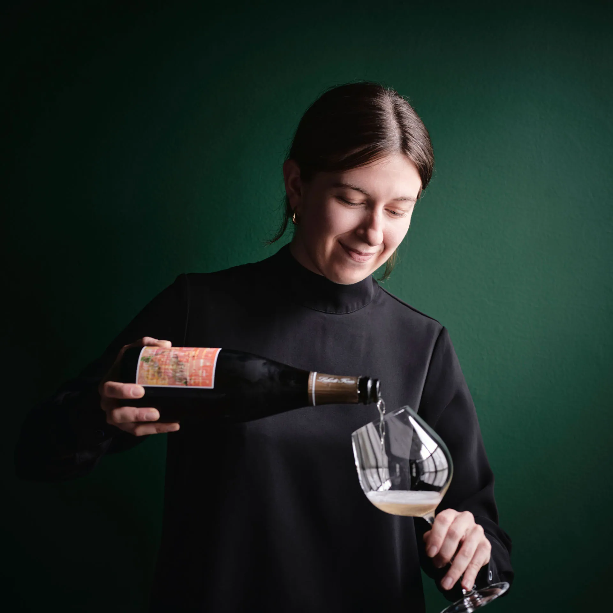

Weinkarte · September 2026
Vom Klassiker bis zum Newcomer.
287 Weine. Unsere Restaurantleiterin Jenny prägt mit ihrer Expertise die Auswahl.
| Getränkebegleitung | mit Alkohol | ohne Alkohol |
|---|---|---|
| 7 Gläser | 115 | 77 |
| 8 Gläser | 130 | 88 |
| 9 Gläser | 145 | 99 |
| 10 Gläser | 160 | 110 |
Die ganze Karte.
Alle 287 Weine des Hauses, nach Art, Herkunft oder Namen. Alle Preise in CHF pro Flasche, inkl. MwSt.
Die ganze Karte.
287 Weine, zum Blättern wie am Tisch. Alle Preise in CHF pro Flasche, inkl. MwSt.
Der Keller.
Jede Flasche ist ein Wein unserer Karte, 287 insgesamt. Tippen Sie eine Flasche an: Weingut, Herkunft und Preis.
Weinkarte · 287 Weine · Preise in CHF pro Flasche, inkl. MwSt.
0Heute